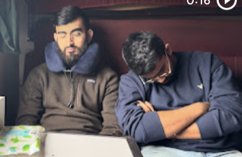
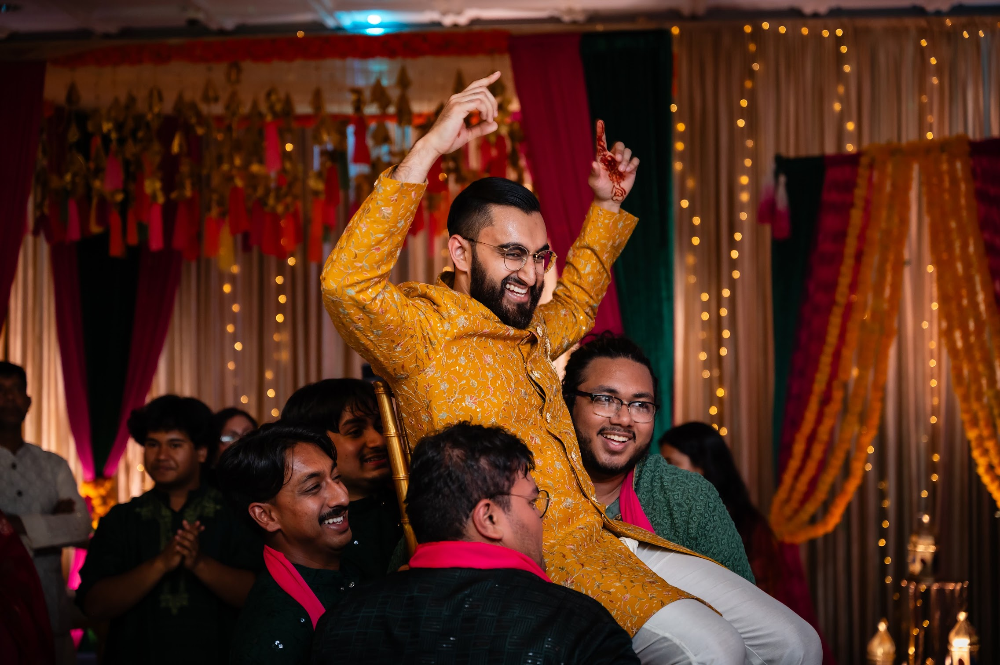
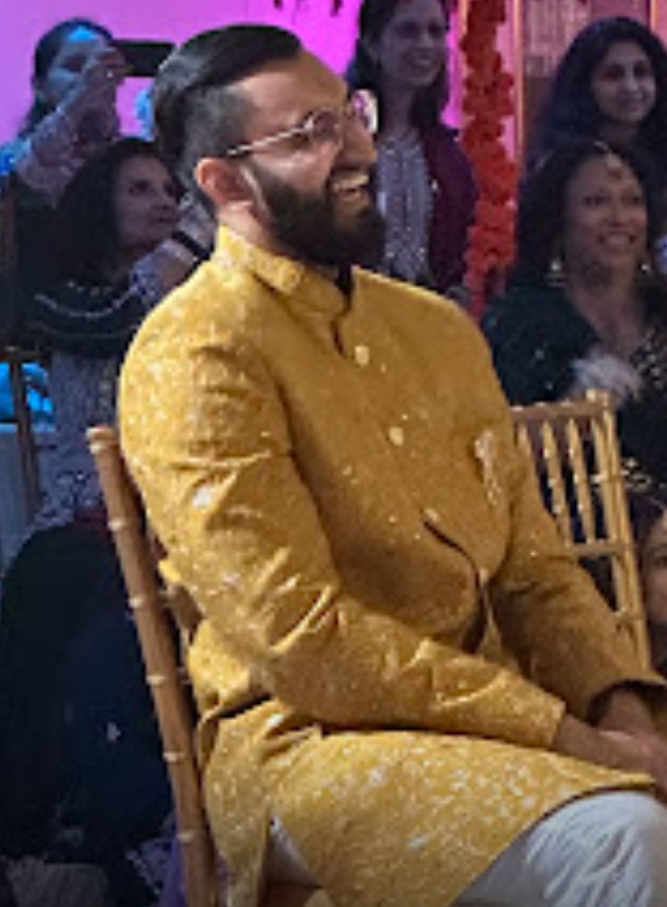
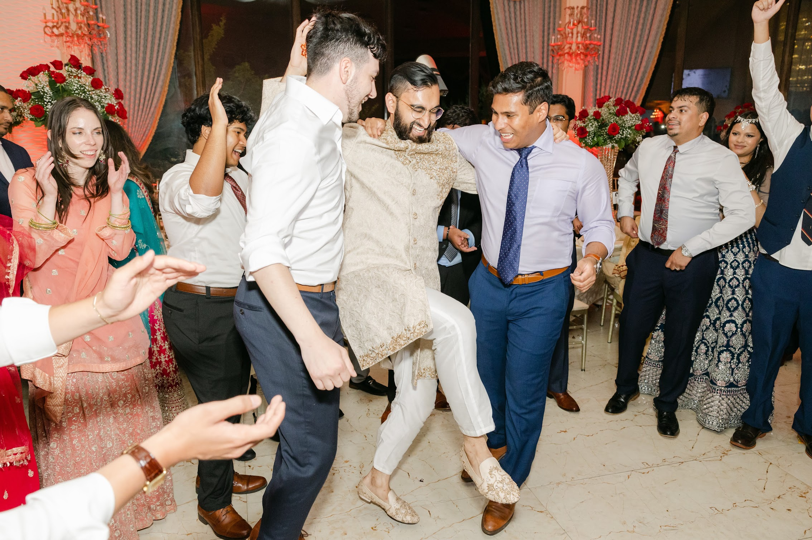
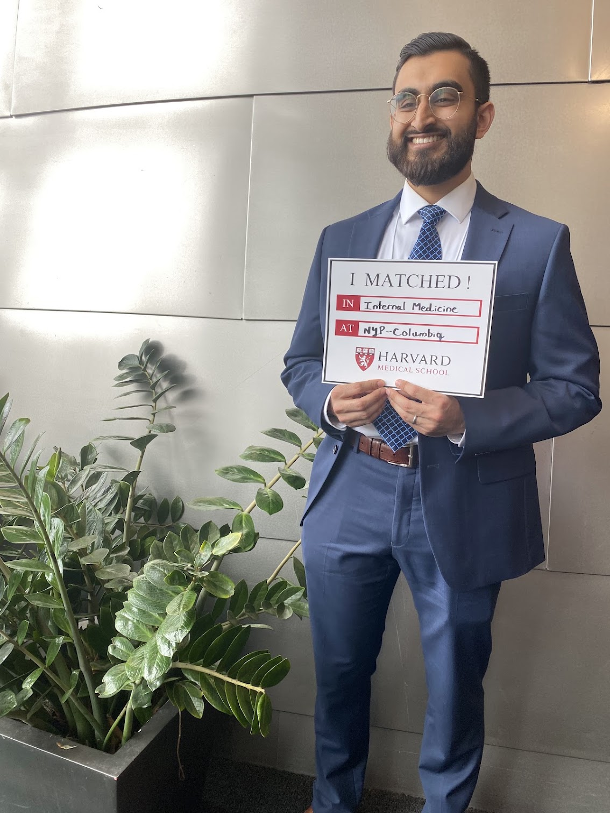
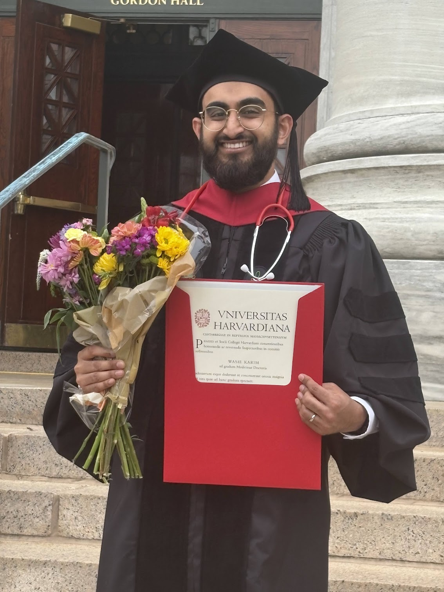
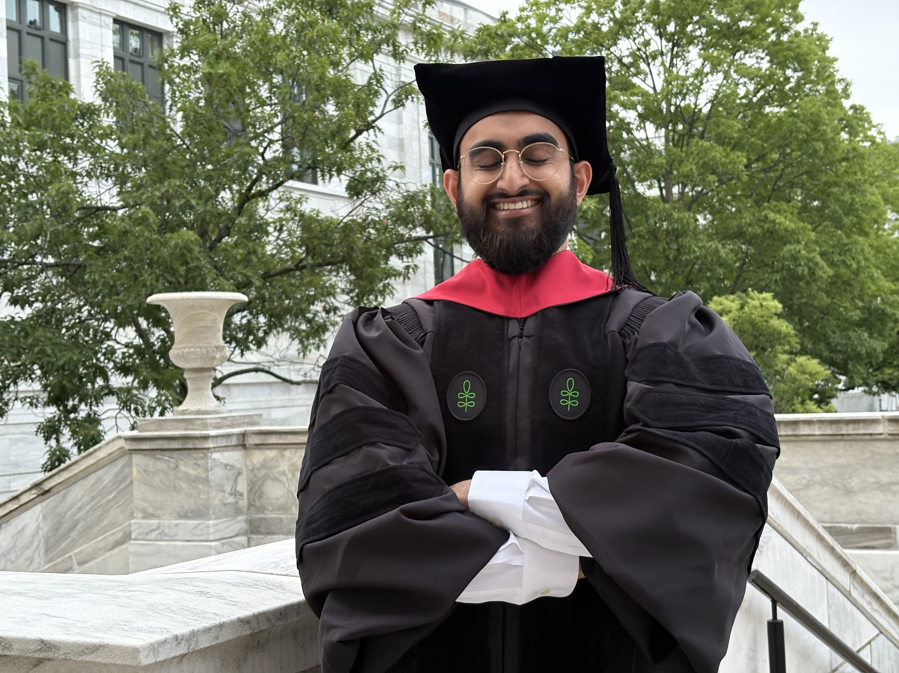
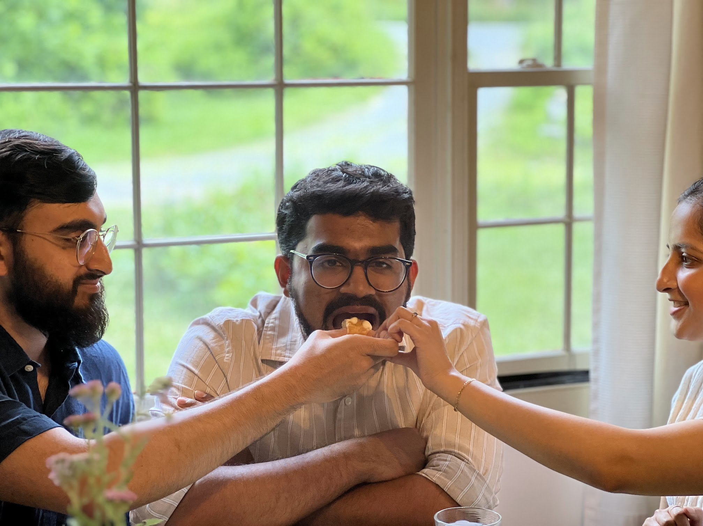
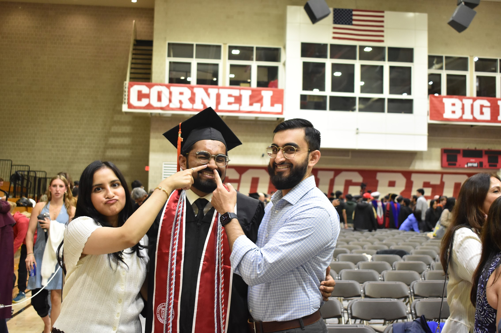

Happy birthday, Wasie
Hey brother.
Take a pause.
Life has moved pretty fast.
Before the next thing, the next plan, the next big adventure… stay here for a minute.

Okay. The rest can wait.
Let’s rewind a little.
Back to November 2022.
And all the life that happened after.
The starting point · November 2022
Remember that
birthday video?
I sent you a compilation of everyone saying happy birthday. All those people, all that love, squeezed into one video.
That was 2022. And looking back now, I keep thinking: how has so much happened since then?

Watch on YouTube
A new beginning
You got into
med school.
A whole new chapter opened up. The kind you work toward for so long, and then suddenly it’s real.
I’m proud of you for getting there. And for everything you put into the journey after that.
Future doctor.
Always my
big brother.
Then came the celebrations
The mehendi.
What a night.
Some memories don’t need much explaining. These pictures do a pretty good job.
You, surrounded by your people. And, apparently, being lifted by them too.


Behind the scenes
But first,
dance practice.
Before the celebration, there was the practice. A little behind-the-scenes memory that deserves its own stop.
Press play. Some moments are better in motion.
Keep the celebration going
And then,
the reception.
A new chapter, a full dance floor, and another memory I’m so glad we get to keep.
If there’s a photo that feels like the opposite of a pause button, it might be this one.

The dream became real · 2025
You matched
at Columbia.
Your dream residency. And then, in 2025, it wasn’t just a dream anymore. You matched at Columbia.
Before the cap and gown, there was this moment. Another reason to stop, take it in, and say: look at you, Wasie. You made it happen.

Look how far you’ve come
Med school graduate.
That’s you.
From getting in to making it through. There’s a whole story between those two moments, and these photos are only a little piece of it.
But let’s pause here especially. You did it, Wasie. I hope you let yourself feel proud of that.


And between the big things
There was just… us.
The ordinary moments get a place in the letter, too.



Back to right now
Happy birthday,
big brother.
Four years ago, I put everyone’s birthday wishes into a video. This time, I wanted to give you a little space to look back.
At everything you’ve done. At the people beside you. At the little moments we might otherwise hurry past.
There’s so much ahead of you. But for today, I hope you take a breath, take it all in, and know how much you’re loved.